브롤스타즈 거스 찾기 응접실 공략, 수정구 비전 3개 14항목 정답표와 카오스 드롭 브롤로윈 4단계
브롤로윈 거스 찾기가 입구·복도·연구실을 지나 4단계 응접실까지 열렸는데요, 이번 단계는 방 한가운데 수정구 앞에서 '기준 이미지'와 똑같은 장면을 세 번 만드는 방식이라 앞 단계와 결이 많이 달라요. 14개 중 하나만 어긋나도 일치수가 13/14에서 멈추기 쉬워서, 비전 세 개의 정답을 물건별 표로 먼저 모아 봤습니다. 1~2단계(입구·복도)는 「브롤스타즈 거스 찾기 공략, FindGus 입구 퍼즐부터 복도 데미안 핀까지 브롤로윈 2026」 글에 정리해 뒀고, 이 글은 3단계 연구실까지 클리어한 상태라는 전제로 이어 가니 앞 단계가 헷갈리시면 그쪽부터 보고 오시면 편하실 거예요~
응접실 공략 순서와 보상만 먼저 보면 이렇게 돼요
응접실은 라이트건으로 수정구를 켜고, 비전 3개를 차례로 14/14까지 맞춘 뒤, 마지막 대화에서 카오스 드롭을 받는 구조예요.
- 입구·복도·연구실을 클리어하고 전투 3승으로 방을 엽니다.
- 라이트건으로 수정구를 켜서 1번째 비전을 시작합니다.
- 비전 1, 2, 3을 기준 이미지와 같은 장면으로 맞춥니다.
- 마지막 대화를 마치고 보상을 받습니다.
| 어디서 | 받는 것 |
|---|---|
| 응접실 클리어 | 카오스 드롭 1개 |
| 보너스: 서비스 벨 연타 | 거울 속 유령 이스터에그(확인된 보상 없음) |
확인된 보상은 카오스 드롭 하나뿐이라, 벨을 누르는 보너스는 구경거리로 즐기시면 돼요.
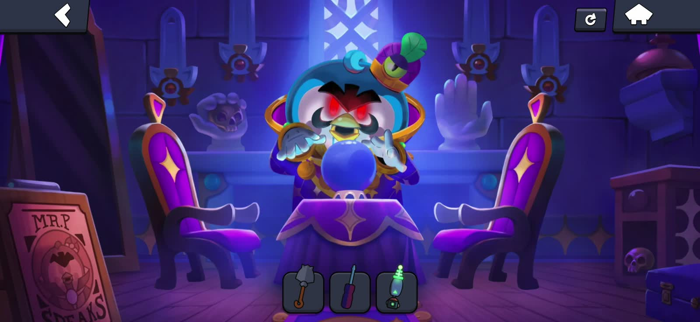
Mr. P와 수정구가 있는 응접실 첫 장면이에요. (이미지 출처: brawlnetwork.com, 게임 화면은 Supercell 저작)
응접실은 어떻게 열리나요
응접실은 입구·복도·연구실을 전부 클리어한 뒤 일반 전투 3승을 채우면 열려요.
지도에서 방이 계단식으로 열리는 구조라 응접실은 연구실 위쪽 왼쪽 방에 있고(지도에는 Parlor로 나오고, 해외 가이드에선 Mr. P's Parlor로 불러요), 이번 이벤트는 이틀 간격으로 단계가 풀려서 해외 가이드 기준 10월 7일에 열렸어요. 아래 지도 화면 아래쪽에 'Win 3 battles to open Parlor!' 문구와 3칸이 보이는데, 문이 안 열릴 때는 앞의 세 방에 클리어 표시가 다 있는지와 이 3칸이 찼는지부터 세어 보면 되죠.
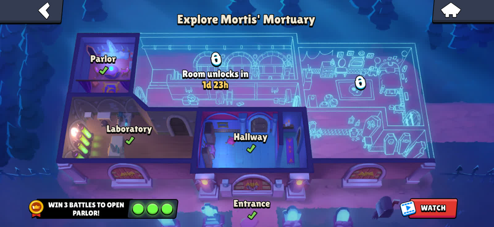
입구·복도·연구실 체크 뒤에 응접실 해금용 3승 칸이 나와요. (이미지 출처: brawlnetwork.com, 게임 화면은 Supercell 저작)
응접실 준비물은 삽과 라이트건, 조작은 어떻게 하나요
응접실에서는 입구에서 얻은 삽과 연구실에서 얻은 벨의 라이트건 두 가지를 모두 써요.
- 삽은 비전 3에서 Mr. P 간판을 부술 때 씁니다.
- 라이트건은 수정구를 켤 때, 그리고 촛대의 초에 불을 붙일 때 씁니다.
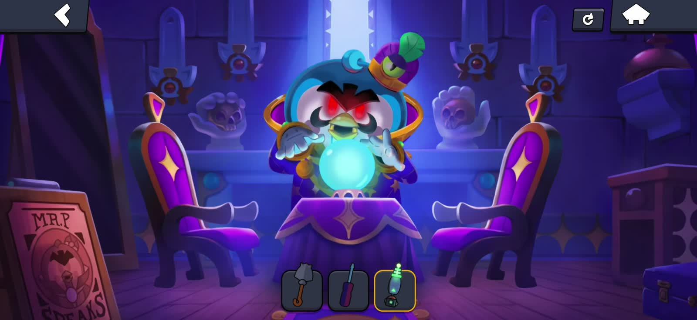
라이트건으로 수정구를 켠 화면이에요. (이미지 출처: brawlnetwork.com, 게임 화면은 Supercell 저작)
조작은 이 정도만 알면 돼요. 촛대 번호는 화면 기준 왼쪽부터 1~4번이에요.
- 수정구를 탭하면 기준 이미지와 현재 일치수(x/14)가 나와요.
- 오른쪽 서랍에서 초를 꺼내 벽 촛대로 끌어다 놓아요.
- 라이트건으로 쏘면 초에 불이 붙어요.
- 불 붙은 초를 한 번 탭하면 꺼지고, 꺼진 초를 한 번 더 탭하면 촛대에서 빠져요.
서랍의 초는 빼서 버려도 다시 꺼내 쓸 수 있어서 모자랄 걱정은 안 하셔도 괜찮답니다.
수정구 비전 1 정답은 의자 안쪽에 초 4개 점화예요
비전 1은 의자 두 개를 테이블 쪽으로 들이고 촛대 네 칸에 초를 전부 켠 채, 석상 둘을 테이블 위에 올리는 장면이에요. 아래 표 세 개는 해외 가이드 기준이라, 최종은 인게임 기준 이미지와 대조해서 확인하세요.
| 물건 | 맞출 상태 |
|---|---|
| 의자 2개 | 양쪽 모두 테이블 쪽(안쪽) |
| 촛대 1~4번 | 4칸 전부 초를 꽂고 점화 |
| 거스·스푸키 석상 | 둘 다 테이블 위 |
| 오른쪽 손 석상 | 해골을 쥐여 둠 |
| 식탁보 | 걷은 상태 |
| 창·가방·서랍 | 전부 닫힘 |
| Mr. P 간판 | 멀쩡한 상태 그대로 |
석상 이름은 해외 가이드에서 스푸키(Spookie)라고 부르는데 한국어 표기는 아직 알려진 게 없더라고요. 의자와 초만 정리해도 일치수가 빠르게 올라가는데, 초를 꺼낸 뒤 서랍은 다시 닫아야 해요(서랍도 14항목 중 하나거든요).
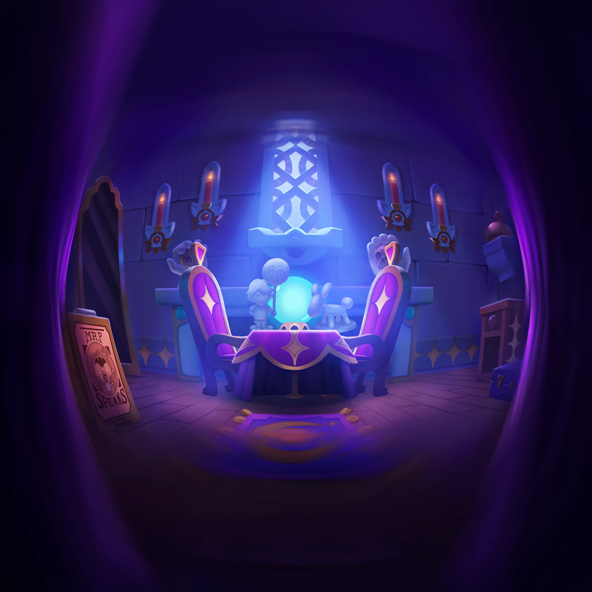
비전 1의 기준 장면이에요. (이미지 출처: brawlnetwork.com, 게임 화면은 Supercell 저작)
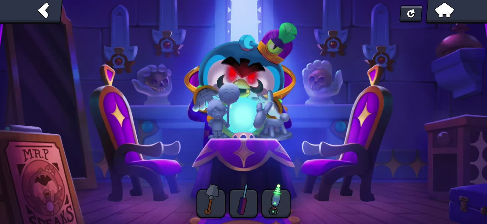
석상 둘을 테이블 위에 올린 모습이에요. (이미지 출처: brawlnetwork.com, 게임 화면은 Supercell 저작)
수정구 비전 2 정답은 석상을 바닥으로 내리고 서랍을 여는 거예요
비전 2는 석상 둘을 바닥에 내리고, 식탁보를 내린 뒤 창·서랍·가방을 모두 여는 장면이에요.
| 물건 | 맞출 상태 |
|---|---|
| 의자 2개 | 왼쪽은 바깥쪽, 오른쪽은 안쪽 |
| 촛대 1~4번 | 1번·4번 점화, 2번·3번은 빈칸 |
| 거스 석상 | 바닥 왼쪽 |
| 스푸키 석상 | 바닥 오른쪽 |
| 오른쪽 손 석상 | 해골을 빼고, 두 번 탭해 손가락 2개 접기 |
| 식탁보 | 내린 상태 |
| 창·서랍·가방 | 전부 열림 |
| Mr. P 간판 | 멀쩡한 상태 그대로 |
촛대가 이 비전에서 제일 헷갈리는 부분이거든요. 1번과 4번은 켜고 가운데 2·3번은 초를 아예 빼서 빈칸으로 둬야 하는데, 초를 꽂은 채로 끄기만 하면 다른 상태로 세어져요. 오른쪽 손 석상은 해골을 뺀 뒤 두 번 탭해 손가락 2개를 접으면 되고, 기준 이미지의 손 모양과 한 번 대조해 보시면 확실합니다. 왼쪽 손 석상은 해골을 쥔 장식이라 손대지 않아도 돼요.
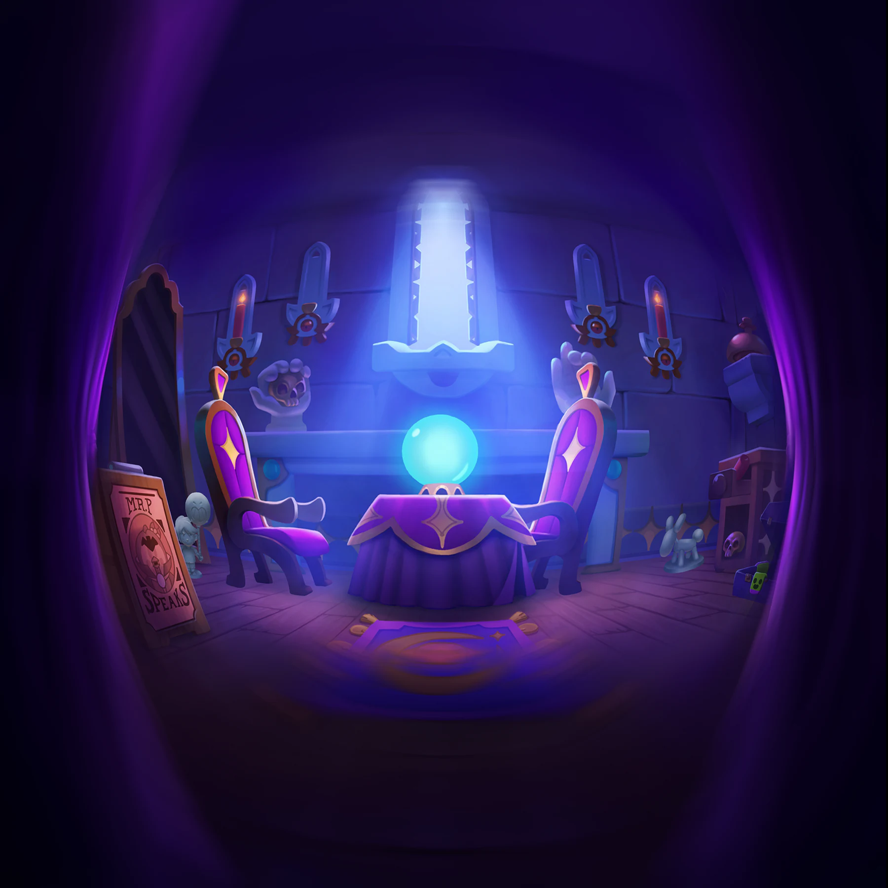
비전 2의 기준 장면이에요. 양끝 촛대만 켜져 있죠. (이미지 출처: brawlnetwork.com, 게임 화면은 Supercell 저작)
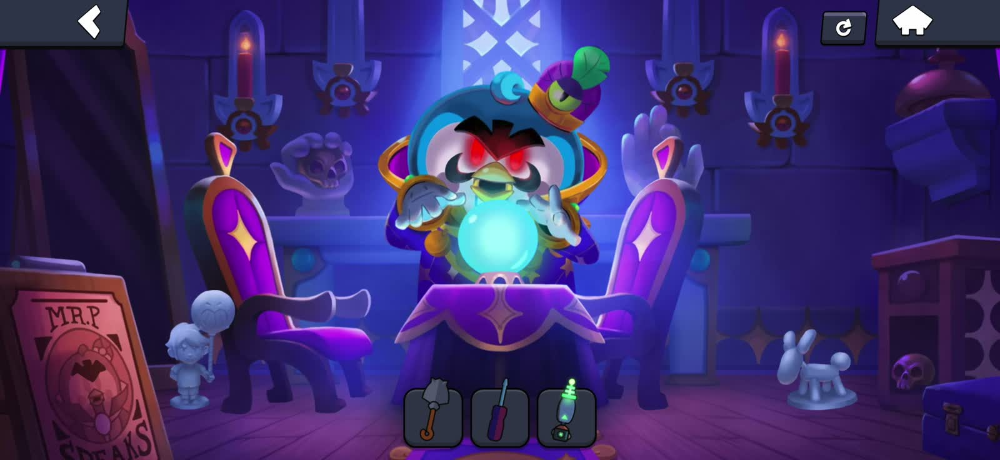
거스는 바닥 왼쪽, 스푸키는 바닥 오른쪽이에요. (이미지 출처: brawlnetwork.com, 게임 화면은 Supercell 저작)
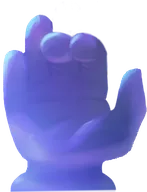
손가락이 접힌 손 석상 모양이에요. (이미지 출처: brawlnetwork.com, 게임 화면은 Supercell 저작)
수정구 비전 3 정답은 삽으로 Mr. P 간판을 부수는 거예요
비전 3은 거스 석상을 테이블 아래 가운데로 넣고, 삽으로 왼쪽 아래 Mr. P 간판을 부수는 마지막 장면이에요.
| 물건 | 맞출 상태 |
|---|---|
| 의자 2개 | 왼쪽은 안쪽, 오른쪽은 바깥쪽 |
| 촛대 1~4번 | 1번 초 제거, 2·3번 불 안 붙인 초, 4번 점화 |
| 거스 석상 | 테이블 아래 가운데 |
| 스푸키 석상 | 테이블 위 |
| 오른쪽 손 석상 | 손가락 접힘 누적 4개 |
| 식탁보 | 걷은 상태 |
| 창·가방 | 닫힘 |
| 서랍 | 열림 |
| Mr. P 간판 | 삽으로 부숨 |
비전 3에서는 촛대 가운데 2·3번이 '빈칸'이 아니라 '초를 꽂아 둔 채 불만 안 붙인' 상태라는 점이 비전 2와 달라요. 손가락은 이전 비전에서 접은 것까지 합쳐 네 개가 접힌 모양이고, 간판은 삽을 고른 채 왼쪽 아래 Mr. P 간판을 탭하면 돼요.
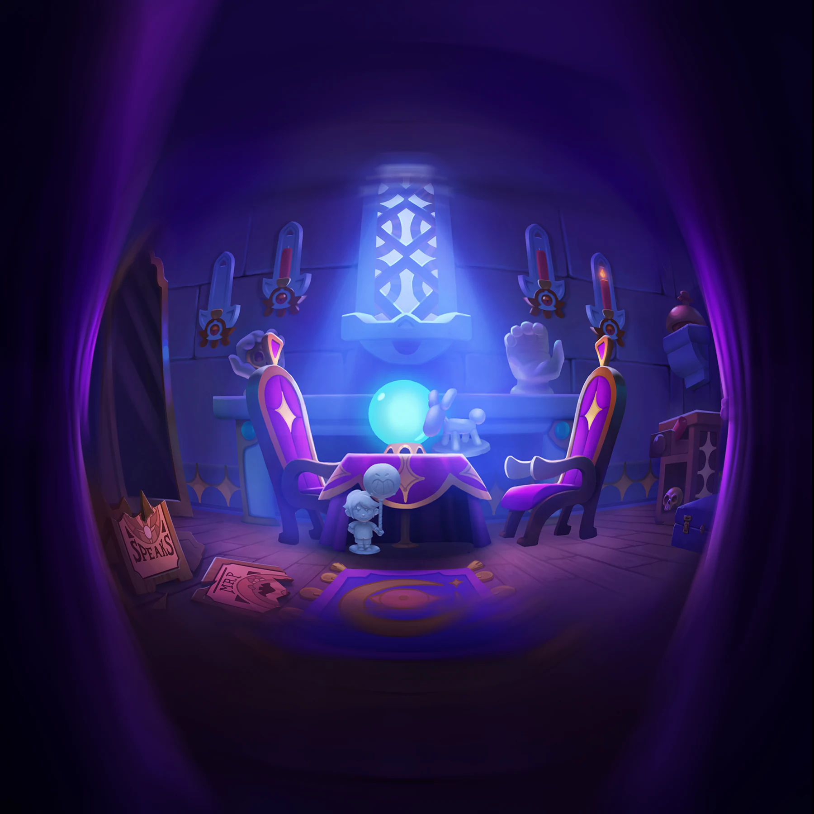
비전 3의 기준 장면이에요. 왼쪽 아래에 부서진 간판이 보여요. (이미지 출처: brawlnetwork.com, 게임 화면은 Supercell 저작)
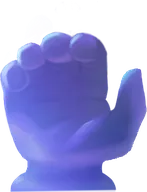
비전 3의 손 석상 모양이에요. (이미지 출처: brawlnetwork.com, 게임 화면은 Supercell 저작)
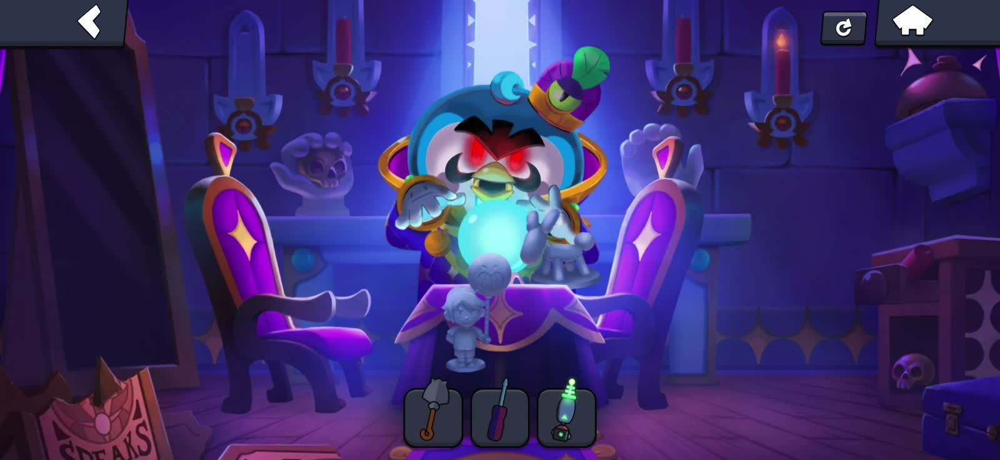
삽으로 부순 Mr. P 간판이에요. (이미지 출처: brawlnetwork.com, 게임 화면은 Supercell 저작)
응접실 카오스 드롭은 어떻게 받나요
비전 3을 14/14로 맞추고 마지막 대화까지 마치면 보상 받기(Claim Reward) 버튼으로 카오스 드롭 1개를 받아요.
대화 중에 화면이 넘어가는 순간 목표 장면이 다음 비전으로 바뀌는 구간이 있으니, 마지막 비전은 대화를 끝까지 넘긴 뒤에 보상 화면이 뜨는지 보시면 돼요. 확인된 보상은 카오스 드롭 하나뿐이니 여기까지 오셨다면 챙겨 가시는 게 좋네요.
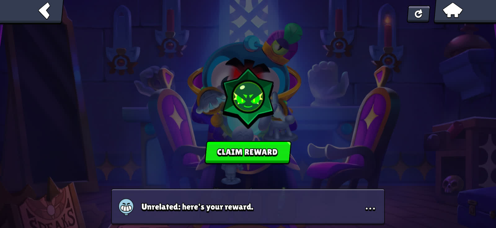
보상 받기를 누르면 카오스 드롭이 들어와요. (이미지 출처: brawlnetwork.com, 게임 화면은 Supercell 저작)
카오스 드롭 아이콘이에요. (이미지 출처: brawlnetwork.com, 게임 화면은 Supercell 저작)
서비스 벨 연타 보너스, 유령은 몇 번째에 나오나요
오른쪽 위 선반의 서비스 벨을 계속 누르면 왼쪽 큰 거울에 13번째는 초록 유령 개, 99번째는 유령 엄마가 나타나요.
- 13번째 벨: 초록 유령 개가 거울에 비쳐요.
- 99번째 벨: 유령 엄마가 거울에 비쳐요.
둘 다 따로 확인된 보상은 없는 이스터에그예요. 유령 엄마를 거스의 엄마라고 소개하는 해외 가이드도 있는데 게임에서 밝힌 내용은 아니에요. 99번이나 누르면 손가락이 꽤 아프더라고요. 호기심이 생길 때 가볍게 해 보세요ㅎㅎ
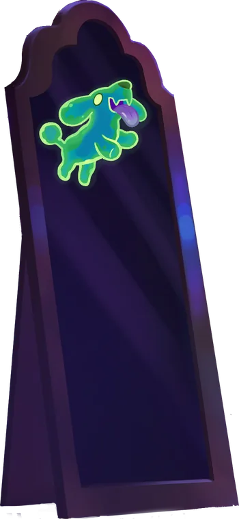
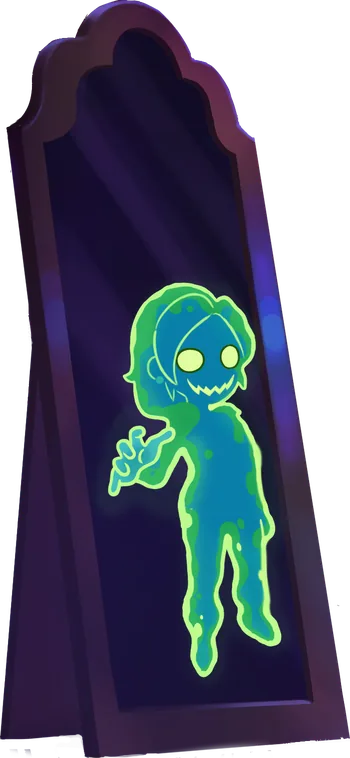
왼쪽이 13번째 벨의 유령 개, 오른쪽이 99번째 벨의 유령 엄마예요. (이미지 출처: brawlnetwork.com, 게임 화면은 Supercell 저작)
응접실에서 막힐 때 체크리스트와 자주 묻는 질문
일치수가 12~13/14에서 멈추면 식탁보·서랍, 촛대 칸 상태, 오른쪽 손 석상, 석상 위치 네 군데부터 보면 대부분 풀려요.
- 식탁보와 서랍은 석상과 따로 세어지는 항목이라 석상만 맞추고 지나치기 쉬워요.
- 촛대 4칸은 빈칸, 불 안 붙인 초, 불 붙은 초 중 어느 상태인지 칸마다 달라요.
- 오른쪽 손 석상은 해골 빼기와 손가락 접기가 서로 다른 동작이에요.
Q. 석상을 맞게 놓은 것 같은데 일치수가 안 올라요.
석상은 목표 구역 안쪽 깊숙이 놓아야 맞는 것으로 세어져요. 구역 가장자리에 걸쳐 있다면 조금 더 안쪽으로 밀어 넣고, 수정구를 탭해 일치수가 올랐는지 확인해 보세요.
Q. 비전을 맞췄는데 일치수가 갑자기 떨어졌어요.
비전 1이나 2를 14/14로 맞추면 목표가 다음 비전으로 바뀌어서 그래요. 방을 잘못 만진 게 아니니 수정구를 한 번 탭해 새 기준 이미지를 확인하고, 그 장면에 맞춰 고치시면 됩니다.
Q. 다음 5단계는 언제 열리나요?
단계가 이틀 간격으로 열려 와서 10월 9일쯤으로 보는 가이드가 있어요. 해외 가이드 한 곳은 이벤트를 10월 12일까지로 안내하는데, 공식 종료일 공지는 아직 확인하지 못했어요.
표대로 따라가다가 비전 3에서 삽으로 간판을 부수는 것만 잊지 않으면 크게 어렵지 않을 거예요~
참고한 곳 (2026.10.09 기준)
· 브롤스타즈 공식 블로그 — 2026년 8월 릴리스 노트
해외 공략 사이트
· Brawl Network — Find Gus Mr. P's Parlor
· Sportsdunia — Brawl Stars Find Gus Event Guide
✔ 브롤스타즈 같이 보기 좋은 내용
· 브롤스타즈 거스 찾기 공략, FindGus 입구 퍼즐부터 복도 데미안 핀까지 브롤로윈 2026
· 브롤스타즈 할로윈 이벤트 정리, 시즌55 브롤로윈 신규 브롤러 빈스 스킨 획득처까지